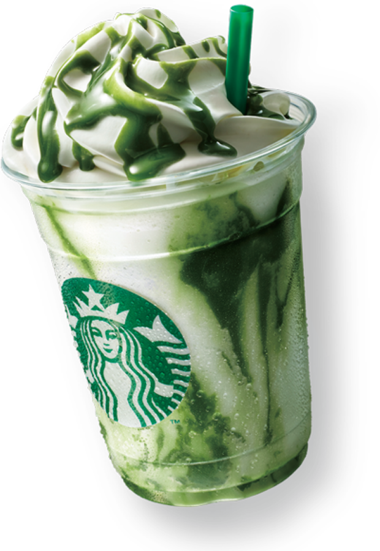

It's not just a coffee
It's Starbucks
From our humble beginnings, Starbucks has always been committed to ethically sourcing and roasting the highest-quality arabica coffee in the world. Our coffee buyers personally travel to coffee farms in Latin America, Africa, and Asia to select the finest beans. Once these quality beans arrive at our roasting plants, our master roasters transform them into the rich, flavorful coffees you know and love
learn more
